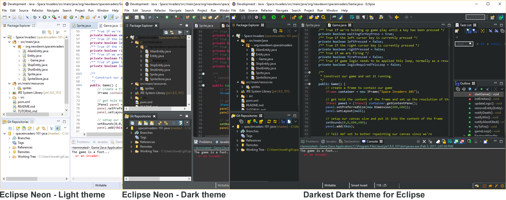
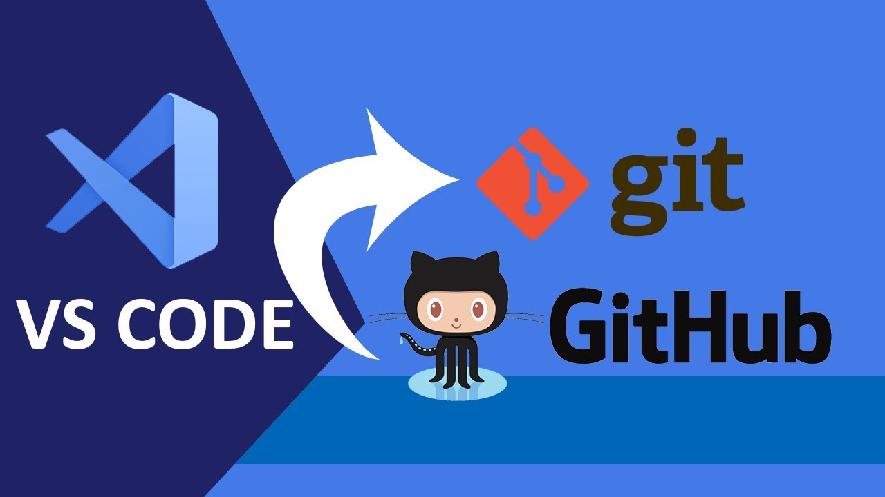

Índice
- Instalación de Entornos de Desarrollo Integrados (IDE)
- Configuración de herramientas de desarrollo
- Gestión de complementos y plugins
- Automatización del entorno de desarrollo
- Generación de ejecutables y compilación
1. Instalación de Entornos de Desarrollo Integrados (IDE)
Un IDE es una herramienta que integra editor, compilador, depurador y utilidades para facilitar el desarrollo. Permite escribir, compilar, ejecutar y depurar código en un entorno unificado.

Tipos de IDE
- Libres: Eclipse, NetBeans, PyCharm Community, Visual Studio Code.
- Propietarios: Visual Studio, IntelliJ IDEA, PyCharm Professional.
1. Comparativa entre IDEs
| IDE | Lenguajes soportados | Características destacadas | Licencia | Tipo | Precio |
|---|---|---|---|---|---|
| Eclipse | Java, C/C++, Python (con plugins) | Gran ecosistema de plugins, soporte para múltiples lenguajes, integración con Git | Libre (EPL) | Libre | Gratis |
| Visual Studio Code | Multilenguaje (con extensiones) | Ligero, gran cantidad de extensiones, integración con Git | Libre (MIT) | Libre | Gratis |
| PyCharm | Python | Inteligencia de código avanzada, integración con frameworks web, herramientas de testing | Libre (Community) / Propietario (Professional) | Mixto | Gratis (Community) / Pago (Professional) |
| IntelliJ IDEA | Java, Kotlin, Groovy, Scala (con plugins) | Inteligencia de código avanzada, integración con sistemas de build, soporte para desarrollo web | Libre (Community) / Propietario (Ultimate) | Mixto | Gratis (Community) / Pago (Ultimate) |
1.1 Instalación y configuración básica
1. Eclipse
- Descargar desde https://www.eclipse.org/downloads/.
- Instalar y seleccionar workspace.
- Configurar plugins necesarios (Maven, Git, etc.).
1.1 Instalación y configuración básica
2. Visual Studio Code
- Descargar desde https://code.visualstudio.com/download.
- Instalar y configurar extensiones (Python, C++, GitLens...).
- Personalizar configuración de usuario (settings.json).
1.1 Instalación y configuración básica
3. PyCharm

- Descargar desde https://www.jetbrains.com/pycharm/download/.
- Seleccionar versión (Community o Professional).
- Configurar intérprete de Python y plugins necesarios.
2. Configuración de herramientas de desarrollo
2.1 Personalización
Los IDEs permiten personalizar la interfaz de usuario para adaptarla a las preferencias del desarrollador.
- Temas claros/oscuros.
- Reorganización de paneles.
- Fuentes monoespaciadas.

3. Gestión de complementos y plugins
- Eclipse: Eclipse Marketplace (EGit, M2E...).
- Visual Studio Code: Marketplace (Python, C/C++, GitLens...).
- PyCharm: Marketplace (Django, Database Tools...).
Instalación, activación/desactivación y actualización desde las secciones de plugins del IDE.
4. Automatización del entorno de desarrollo
4.1 Scripts
Un script es un archivo de texto que contiene instrucciones ejecutables. Se utilizan para automatizar tareas repetitivas.
Tipos de scripts:
- Shell scripts: Para sistemas Unix/Linux (Bash, Zsh).
- Batch scripts: Para Windows (.bat, .cmd).
- Python scripts: Multiplataforma, versátiles para tareas de automatización.
Ejemplo de script Python:
#!/usr/bin/env python3
import os
def main():
print("Hola desde un script Python")
os.system("ls -l")
if __name__ == "__main__":
main()4.2 Integración con GIT
GIT es un sistema de control de versiones distribuido que permite gestionar el historial de cambios en proyectos de software.
Integración en IDEs:
- Eclipse: EGit plugin para gestión de repositorios.
- Visual Studio Code: Extensión GitLens para visualización de cambios y gestión de repositorios.
- PyCharm: Integración nativa con Git para control de versiones.
4.3 Integración VSCode con GIT
Ejemplo de integración de GIT en Visual Studio Code:
- Instalar extensión GitLens.
- Clonar un repositorio desde GitHub.
- Realizar cambios en el código y hacer commit.
- Subir cambios al repositorio remoto.

4.4 Tutorial de integración con GIT + GITHUB paso a paso
4.1 ¿Qué es GitHub?
GitHub es una plataforma de alojamiento de código que utiliza Git para el control de versiones. Permite a los desarrolladores colaborar en proyectos, gestionar repositorios y compartir código de forma eficiente.
A continuación, se detallan los pasos para integrar Git con GitHub desde un entorno de desarrollo local.
4.2 Crear cuenta en GitHub
- Accede a github.com y regístrate con tu email institucional.
- Confirma el correo y completa el perfil (usuario y 2FA recomendado).
4.3 Crear un repositorio remoto
- En GitHub: New > Repository.
- Asigna nombre (p. ej.
entorno-desarrollo), visibilidad (privado/público) y, opcionalmente, marca “Add a README”. - Guarda la URL del repo (HTTPS o SSH) para el push.
4.4 Primer commit & push (línea de comandos)
- Configura tu identidad (una vez por equipo):
git config --global user.name "Tu Nombre" git config --global user.email "tu_email@dominio.com" - Prepara el proyecto local (si es la primera vez, crea un nuevo directorio, crea contenido y haz commit & push):
mkdir entorno-desarrollo cd entorno-desarrollo git init echo "# Entorno de desarrollo" > README.md git add . git commit -m "chore: primer commit" git push -u origin main - Si el proyecto ya existe y queremos incorporarnos, clona el repositorio remoto:
cd entorno-desarrollo git clone https://github.com/usuario/entorno-desarrollo.git - Conecta con el repositorio remoto (sustituye la URL):
git remote add origin https://github.com/usuario/entorno-desarrollo.git git branch -M main git push -u origin main
Opción 2 si no se ha desarrollado nada, para la primera vez que trabajamos en el proyecto:
Opcion 3 si en el repositorio ya existe contenido y nos incorporamos al proyecto:
6.5 Primer commit & push (desde el IDE)
- Eclipse (EGit): Importa o crea proyecto → Team > Share Project… > Git → prepara cambios en Git Staging (add/commit) → Commit and Push… → pega la URL del repo y confirma.
- Visual Studio: Abre proyecto → Git > Create Git Repository o Clone → realiza cambios → Git > Commit → Push.
- PyCharm / IntelliJ: VCS > Enable Version Control Integration (Git) → Commit (selecciona archivos y mensaje) → Push (configura remoto si es necesario).
- Línea de comandos: Ubicarse dentro del directorio del proyecto y ejecutar los comandos de Git vistos anteriormente.
Consejos: usa HTTPS con Git Credential Manager o SSH con claves; incluye .gitignore para omitir
archivos de configuración local; realiza commits pequeños y
con mensajes claros.
5. Compilación de código
La compilación es el proceso de transformar código fuente en código ejecutable. Los IDEs integran herramientas para compilar y ejecutar proyectos.
Los pasos para compilar un proyecto en un IDE típico son:
- Configurar el proyecto (definir dependencias, rutas de compilación, etc.).
- Escribir o modificar el código fuente.
- Compilar el código fuente (normalmente con un botón "Build" o "Compile").
- Ejecutar el programa compilado (con un botón "Run" o "Execute").